8 Weeks
Project Duration
3
Software Used
8
Workflow Steps
Internship Report
Deliverable
Project Facts
Executive Summary
Industrial training carried out at a mining operation to develop practical engineering skills in geology, mining operations, field mapping, sampling and technical reporting.
Project Objectives
- Apply classroom knowledge in industry.
- Learn mining operations.
- Improve geological interpretation.
- Develop professional communication.
Study Area
Industrial mining environment involving geological, mining and processing activities.
Methodology
- Site reconnaissance
- Geophysical survey planning
- Traverse establishment
- Electrical resistivity surveying
- Data processing
- Borehole drilling
- Lithological logging
- Borehole construction
- Pump installation
- Technical reporting
Engineering Workflow
Step 1
Company orientation
Step 2
Site reconnaissance
Step 3
Traverse line establishment
Step 4
Electrode installation
Step 5
Geophysical data acquisition
Step 6
Data interpretation
Step 7
Borehole drilling
Step 8
Geological logging
Step 9
Casing installation
Step 10
Gravel packing and grouting
Step 11
Pump installation
Step 12
Borehole completion
Step 13
Final documentation
Engineering Workflow Gallery
{kind=link}
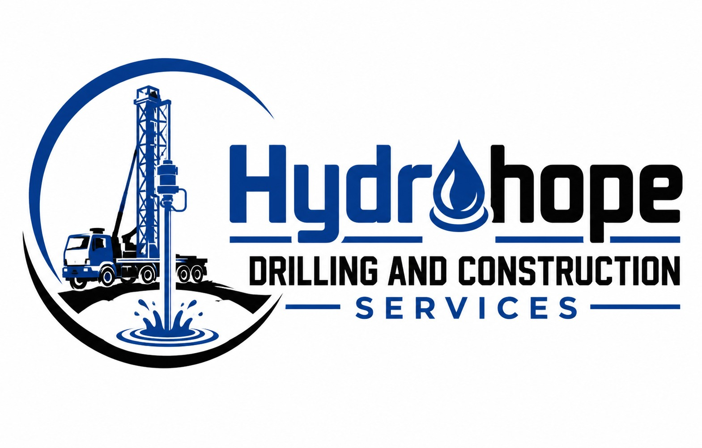
Step 1: Company Introduction
Introduction to the company and internship orientation.
{kind=link}
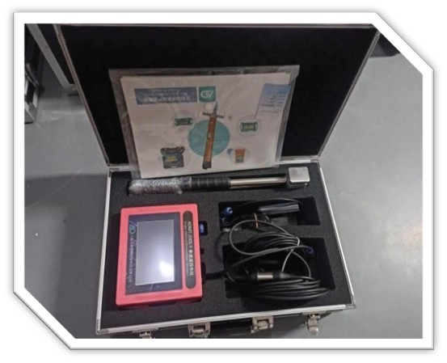
Step 2: ADMT Equipment
ADMT equipment used during geophysical investigations.
{kind=link}
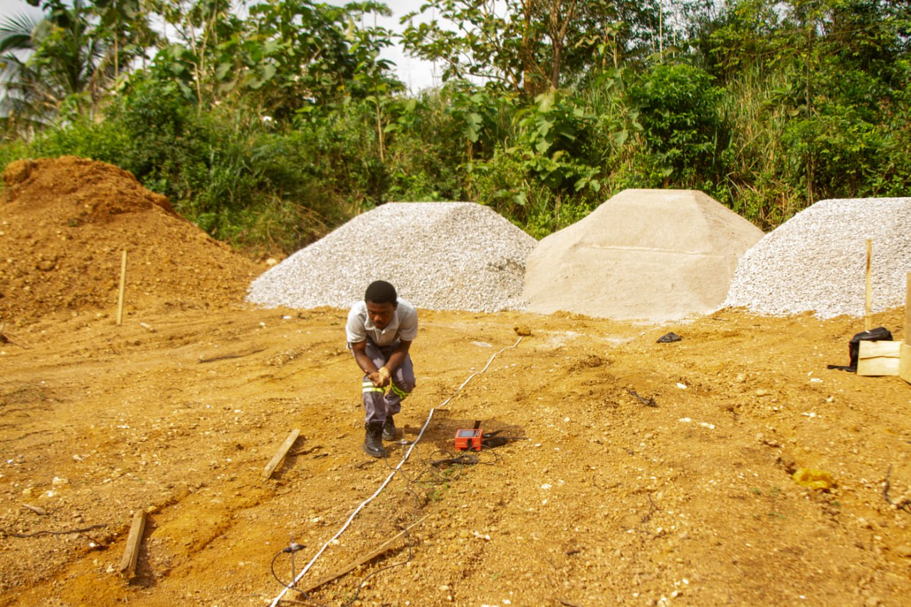
Step 3: Traverse Line Establishment
Establishing traverse lines prior to geophysical data acquisition.

Step 4: Electrode Installation
Electrodes positioned for electrical resistivity surveying.
{kind=link}
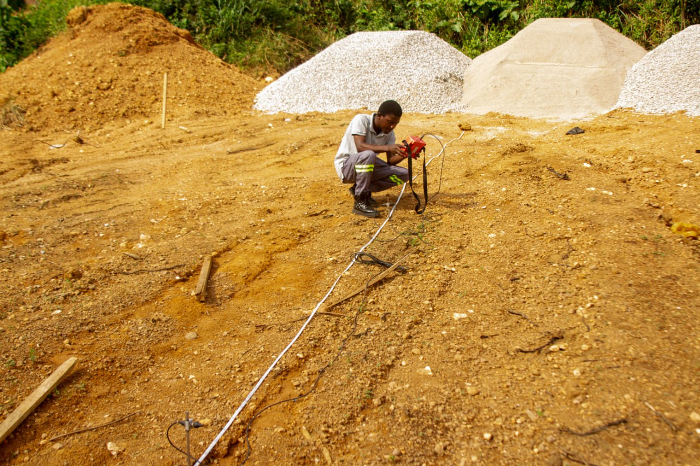
Step 5: Geophysical Survey
Conducting field geophysical investigations for groundwater exploration.
{kind=link}
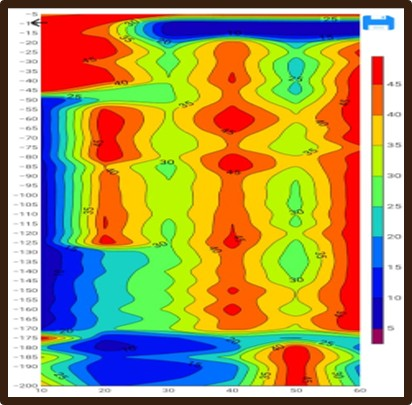
Step 6: Contour Mapping
Preparing contour maps for interpreting the project area.
{kind=link}
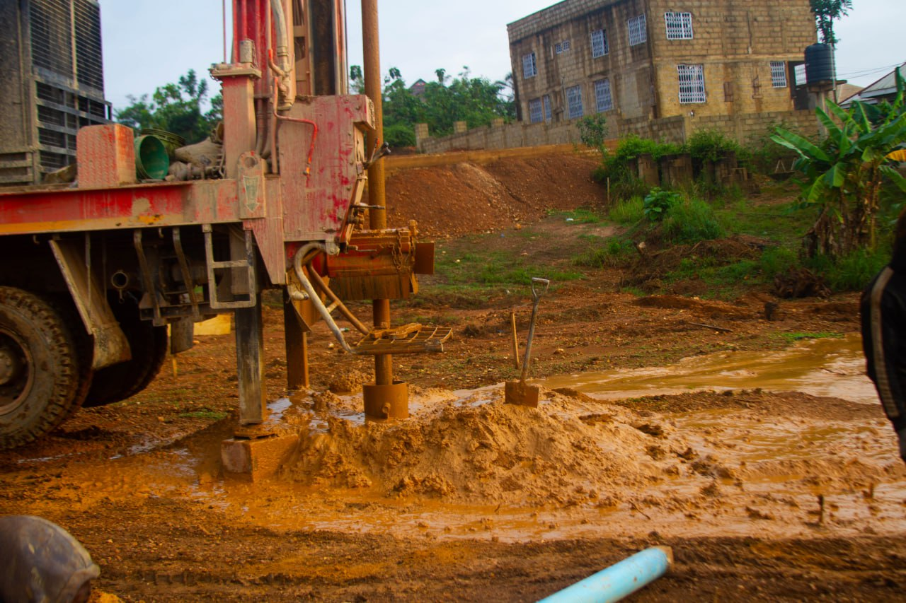
Step 7: Borehole Drilling
Borehole drilling operations following interpretation of geophysical results.
{kind=link}
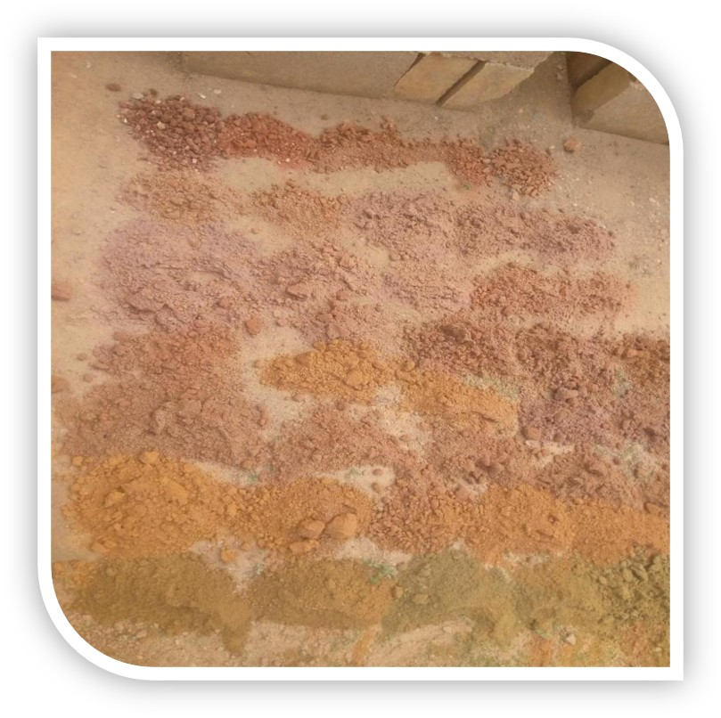
Step 8: Borehole Logging
Geological logging and documentation of borehole formations.
{kind=link}
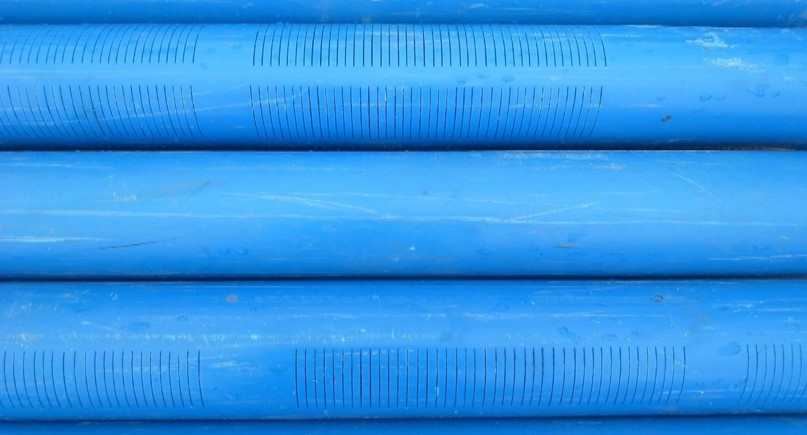
Step 9: Screen Pipes
Installation of screened casing for groundwater production.
{kind=link}
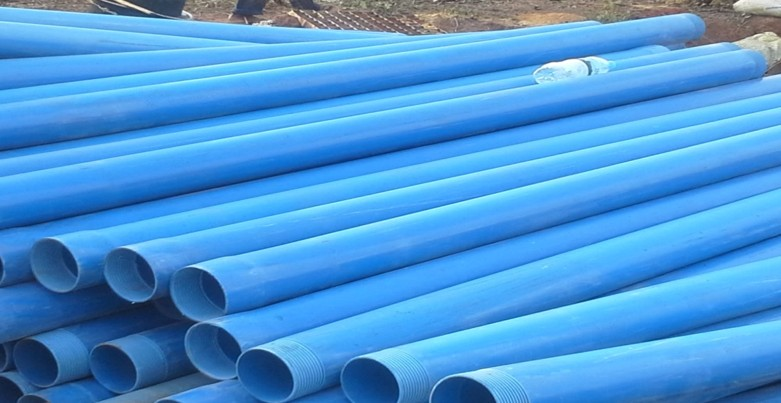
Step 10: Plain Pipes
Installing plain casing pipes during borehole completion.
{kind=link}
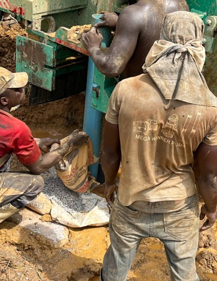
Step 11: Gravel Packing and Grouting
Borehole completion through gravel packing and sealing.
{kind=link}
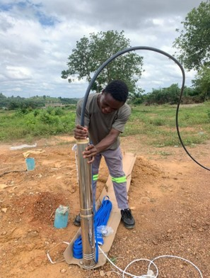
Step 12: Pump Installation
Installing the production pump after successful borehole development.
Results
- Improved practical geological skills.
- Better understanding of mining operations.
- Experience working with professional engineers.
Lessons Learned
- Importance of safety.
- Teamwork.
- Professional communication.
Software Used
- Microsoft Excel
- Leapfrog Geo
- QGIS
Technical Skills Demonstrated
- Groundwater Exploration
- Geophysical Surveying
- Electrical Resistivity
- Borehole Drilling
- Geological Logging
- Borehole Construction
- Pump Installation
- Technical Reporting
- Field Data Collection
- Team Collaboration
References
- Company training manuals.
- KNUST Industrial Attachment Guidelines.
Project Report
Download Full Project ReportSoftware Used
Technical Skills
Project Downloads
Download reports, datasets, presentations and project resources.
Related Engineering Projects